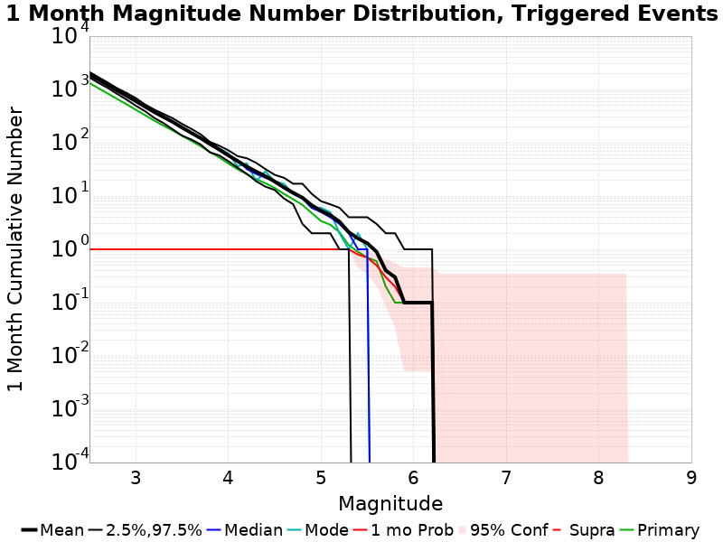
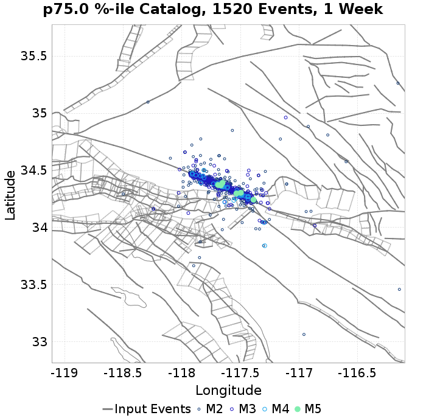
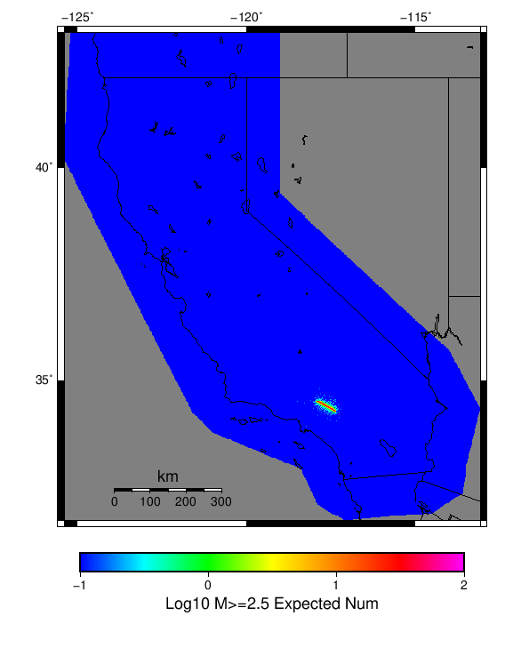

Mojave M7 Results
| Mojave M7 |
|---|
| Num Simulations | 10 |
| Start Time | 2018/01/01 00:00:00 UTC |
| Start Time Epoch Milliseconds | 1514764800000 |
| Duration | 10 Years |
| Includes Spontaneous? | false |
| Historical Ruptures | (none) |
Table Of Contents
Probabilities Summary Table
(top)
| Magnitude | 1 Hour Prob | 1 Day Prob | 1 Week Prob | 1 Month Prob | 1 Year Prob | 10 Year Prob |
|---|
| M≥4 | 1.000 (100.00%) | 1.000 (100.00%) | 1.000 (100.00%) | 1.000 (100.00%) | 1.000 (100.00%) | 1.000 (100.00%) |
| M≥4.5 | 1.000 (100.00%) | 1.000 (100.00%) | 1.000 (100.00%) | 1.000 (100.00%) | 1.000 (100.00%) | 1.000 (100.00%) |
| M≥5 | 0.500 (50.00%) | 0.900 (90.00%) | 1.000 (100.00%) | 1.000 (100.00%) | 1.000 (100.00%) | 1.000 (100.00%) |
| M≥5.5 | 0.400 (40.00%) | 0.500 (50.00%) | 0.600 (60.00%) | 0.700 (70.00%) | 0.700 (70.00%) | 0.700 (70.00%) |
| M≥6 | 0.000 (0.00%) | 0.000 (0.00%) | 0.000 (0.00%) | 0.100 (10.00%) | 0.200 (20.00%) | 0.200 (20.00%) |
| M≥7.03 | 0.000 (0.00%) | 0.000 (0.00%) | 0.000 (0.00%) | 0.000 (0.00%) | 0.000 (0.00%) | 0.000 (0.00%) |
Magnitude Number Distribution
(top)
10 Year Magnitude Number Distribution
(top)
Legend
- Mean (thick black line): mean expected number across all 10 catalogs
- 2.5%,97.5% (thin black lines): expected number percentiles across all 10 catalogs
- Median (thin blue line): median expected number across all 10 catalogs
- Mode (thin cyan line): modal expected number across all 10 catalogs
- 10 yr Probability (thin red line): 10 year probability calculated as the fraction of catalogs with at least 1 occurrence
- 10 yr Supraseismogenic Probability (thin dashed red line): same as above, but only for supraseismogenic ruptures on explicitly modeled UCERF3 faults
- 95% Conf (light red shaded region): binomial 95% confidence bounds on probability
- Primary (thin green line): mean expected number from primary triggered aftershocks only (no secondary, tertiary, etc...) across all 10 catalogs
| Mag | Mean | 2.5 %ile | 97.5 %ile | Median | Mode | 10 yr Probability | 10 yr Supra-Seis Prob | Primary Aftershocks Mean |
|---|
| M≥2.5 | 3102.600 | 2572.000 | 3711.000 | 3049.000 | 3255.000 | 1.000 (100.00%) | 0.100 (10.00%) | 1781.100 |
| M≥2.6 | 2461.900 | 2013.000 | 2935.000 | 2413.000 | 2515.000 | 1.000 (100.00%) | 0.100 (10.00%) | 1409.700 |
| M≥2.7 | 1963.100 | 1593.000 | 2310.000 | 1916.000 | 2034.000 | 1.000 (100.00%) | 0.100 (10.00%) | 1122.600 |
| M≥2.8 | 1547.000 | 1243.000 | 1836.000 | 1514.000 | 1514.000 | 1.000 (100.00%) | 0.100 (10.00%) | 884.600 |
| M≥2.9 | 1225.400 | 991.000 | 1440.000 | 1227.000 | 1259.000 | 1.000 (100.00%) | 0.100 (10.00%) | 701.100 |
| M≥3 | 971.300 | 791.000 | 1130.000 | 979.000 | 984.000 | 1.000 (100.00%) | 0.100 (10.00%) | 553.000 |
| M≥3.1 | 766.500 | 621.000 | 900.000 | 761.000 | 783.000 | 1.000 (100.00%) | 0.100 (10.00%) | 438.800 |
| M≥3.2 | 610.900 | 484.000 | 734.000 | 621.000 | 622.000 | 1.000 (100.00%) | 0.100 (10.00%) | 348.600 |
| M≥3.3 | 487.900 | 379.000 | 596.000 | 491.000 | 491.000 | 1.000 (100.00%) | 0.100 (10.00%) | 276.900 |
| M≥3.4 | 388.700 | 294.000 | 488.000 | 393.000 | 396.000 | 1.000 (100.00%) | 0.100 (10.00%) | 220.600 |
| M≥3.5 | 308.400 | 235.000 | 381.000 | 306.000 | 317.000 | 1.000 (100.00%) | 0.100 (10.00%) | 176.500 |
| M≥3.6 | 247.100 | 191.000 | 304.000 | 248.000 | 250.000 | 1.000 (100.00%) | 0.100 (10.00%) | 142.900 |
| M≥3.7 | 196.900 | 144.000 | 243.000 | 194.000 | 197.000 | 1.000 (100.00%) | 0.100 (10.00%) | 113.400 |
| M≥3.8 | 155.200 | 107.000 | 205.000 | 154.000 | 157.000 | 1.000 (100.00%) | 0.100 (10.00%) | 88.200 |
| M≥3.9 | 121.500 | 92.000 | 161.000 | 119.000 | 122.000 | 1.000 (100.00%) | 0.100 (10.00%) | 70.100 |
| M≥4 | 96.400 | 69.000 | 127.000 | 97.000 | 97.000 | 1.000 (100.00%) | 0.100 (10.00%) | 55.100 |
| M≥4.1 | 75.800 | 54.000 | 95.000 | 76.000 | 77.000 | 1.000 (100.00%) | 0.100 (10.00%) | 43.800 |
| M≥4.2 | 59.300 | 41.000 | 78.000 | 60.000 | 60.000 | 1.000 (100.00%) | 0.100 (10.00%) | 34.900 |
| M≥4.3 | 47.300 | 30.000 | 67.000 | 46.000 | 48.000 | 1.000 (100.00%) | 0.100 (10.00%) | 28.200 |
| M≥4.4 | 38.500 | 22.000 | 51.000 | 38.000 | 49.000 | 1.000 (100.00%) | 0.100 (10.00%) | 23.300 |
| M≥4.5 | 31.000 | 19.000 | 42.000 | 31.000 | 33.000 | 1.000 (100.00%) | 0.100 (10.00%) | 19.000 |
| M≥4.6 | 24.600 | 15.000 | 36.000 | 25.000 | 29.000 | 1.000 (100.00%) | 0.100 (10.00%) | 15.100 |
| M≥4.7 | 20.000 | 12.000 | 30.000 | 19.000 | 19.000 | 1.000 (100.00%) | 0.100 (10.00%) | 12.200 |
| M≥4.8 | 16.200 | 5.000 | 23.000 | 17.000 | 23.000 | 1.000 (100.00%) | 0.100 (10.00%) | 9.900 |
| M≥4.9 | 11.600 | 2.000 | 20.000 | 13.000 | 13.000 | 1.000 (100.00%) | 0.100 (10.00%) | 7.200 |
| M≥5 | 8.600 | 2.000 | 14.000 | 6.000 | 6.000 | 1.000 (100.00%) | 0.100 (10.00%) | 5.000 |
| M≥5.1 | 6.600 | 2.000 | 13.000 | 5.000 | 5.000 | 1.000 (100.00%) | 0.100 (10.00%) | 4.000 |
| M≥5.2 | 5.000 | 2.000 | 10.000 | 3.000 | 3.000 | 1.000 (100.00%) | 0.100 (10.00%) | 3.000 |
| M≥5.3 | 3.300 | 1.000 | 7.000 | 2.000 | 2.000 | 1.000 (100.00%) | 0.100 (10.00%) | 1.900 |
| M≥5.4 | 2.500 | 0.000 | 6.000 | 2.000 | 2.000 | 0.900 (90.00%) | 0.100 (10.00%) | 1.400 |
| M≥5.5 | 1.900 | 0.000 | 6.000 | 2.000 | 2.000 | 0.700 (70.00%) | 0.100 (10.00%) | 1.000 |
| M≥5.6 | 1.400 | 0.000 | 5.000 | 1.000 | 0.000 | 0.600 (60.00%) | 0.100 (10.00%) | 0.800 |
| M≥5.7 | 0.600 | 0.000 | 3.000 | 0.000 | 0.000 | 0.400 (40.00%) | 0.100 (10.00%) | 0.300 |
| M≥5.8 | 0.500 | 0.000 | 3.000 | 0.000 | 0.000 | 0.300 (30.00%) | 0.100 (10.00%) | 0.200 |
| M≥5.9 | 0.200 | 0.000 | 1.000 | 0.000 | 0.000 | 0.200 (20.00%) | 0.100 (10.00%) | 0.200 |
| M≥6 | 0.200 | 0.000 | 1.000 | 0.000 | 0.000 | 0.200 (20.00%) | 0.100 (10.00%) | 0.200 |
| M≥6.1 | 0.200 | 0.000 | 1.000 | 0.000 | 0.000 | 0.200 (20.00%) | 0.100 (10.00%) | 0.200 |
| M≥6.2 | 0.200 | 0.000 | 1.000 | 0.000 | 0.000 | 0.200 (20.00%) | 0.100 (10.00%) | 0.200 |
| M≥6.3 | 0.100 | 0.000 | 1.000 | 0.000 | 0.000 | 0.100 (10.00%) | 0.100 (10.00%) | 0.100 |
| M≥6.4 | 0.100 | 0.000 | 1.000 | 0.000 | 0.000 | 0.100 (10.00%) | 0.100 (10.00%) | 0.100 |
| M≥6.5 | 0.000 | 0.000 | 0.000 | 0.000 | 0.000 | 0.000 (0.00%) | 0.000 (0.00%) | 0.000 |
| M≥6.6 | 0.000 | 0.000 | 0.000 | 0.000 | 0.000 | 0.000 (0.00%) | 0.000 (0.00%) | 0.000 |
| M≥6.7 | 0.000 | 0.000 | 0.000 | 0.000 | 0.000 | 0.000 (0.00%) | 0.000 (0.00%) | 0.000 |
| M≥6.8 | 0.000 | 0.000 | 0.000 | 0.000 | 0.000 | 0.000 (0.00%) | 0.000 (0.00%) | 0.000 |
| M≥6.9 | 0.000 | 0.000 | 0.000 | 0.000 | 0.000 | 0.000 (0.00%) | 0.000 (0.00%) | 0.000 |
| M≥7 | 0.000 | 0.000 | 0.000 | 0.000 | 0.000 | 0.000 (0.00%) | 0.000 (0.00%) | 0.000 |
| M≥7.1 | 0.000 | 0.000 | 0.000 | 0.000 | 0.000 | 0.000 (0.00%) | 0.000 (0.00%) | 0.000 |
| M≥7.2 | 0.000 | 0.000 | 0.000 | 0.000 | 0.000 | 0.000 (0.00%) | 0.000 (0.00%) | 0.000 |
| M≥7.3 | 0.000 | 0.000 | 0.000 | 0.000 | 0.000 | 0.000 (0.00%) | 0.000 (0.00%) | 0.000 |
| M≥7.4 | 0.000 | 0.000 | 0.000 | 0.000 | 0.000 | 0.000 (0.00%) | 0.000 (0.00%) | 0.000 |
| M≥7.5 | 0.000 | 0.000 | 0.000 | 0.000 | 0.000 | 0.000 (0.00%) | 0.000 (0.00%) | 0.000 |
| M≥7.6 | 0.000 | 0.000 | 0.000 | 0.000 | 0.000 | 0.000 (0.00%) | 0.000 (0.00%) | 0.000 |
| M≥7.7 | 0.000 | 0.000 | 0.000 | 0.000 | 0.000 | 0.000 (0.00%) | 0.000 (0.00%) | 0.000 |
| M≥7.8 | 0.000 | 0.000 | 0.000 | 0.000 | 0.000 | 0.000 (0.00%) | 0.000 (0.00%) | 0.000 |
| M≥7.9 | 0.000 | 0.000 | 0.000 | 0.000 | 0.000 | 0.000 (0.00%) | 0.000 (0.00%) | 0.000 |
| M≥8 | 0.000 | 0.000 | 0.000 | 0.000 | 0.000 | 0.000 (0.00%) | 0.000 (0.00%) | 0.000 |
| M≥8.1 | 0.000 | 0.000 | 0.000 | 0.000 | 0.000 | 0.000 (0.00%) | 0.000 (0.00%) | 0.000 |
| M≥8.2 | 0.000 | 0.000 | 0.000 | 0.000 | 0.000 | 0.000 (0.00%) | 0.000 (0.00%) | 0.000 |
| M≥8.3 | 0.000 | 0.000 | 0.000 | 0.000 | 0.000 | 0.000 (0.00%) | 0.000 (0.00%) | 0.000 |
| M≥8.4 | 0.000 | 0.000 | 0.000 | 0.000 | 0.000 | 0.000 (0.00%) | 0.000 (0.00%) | 0.000 |
| M≥8.5 | 0.000 | 0.000 | 0.000 | 0.000 | 0.000 | 0.000 (0.00%) | 0.000 (0.00%) | 0.000 |
| M≥8.6 | 0.000 | 0.000 | 0.000 | 0.000 | 0.000 | 0.000 (0.00%) | 0.000 (0.00%) | 0.000 |
| M≥8.7 | 0.000 | 0.000 | 0.000 | 0.000 | 0.000 | 0.000 (0.00%) | 0.000 (0.00%) | 0.000 |
| M≥8.8 | 0.000 | 0.000 | 0.000 | 0.000 | 0.000 | 0.000 (0.00%) | 0.000 (0.00%) | 0.000 |
| M≥8.9 | 0.000 | 0.000 | 0.000 | 0.000 | 0.000 | 0.000 (0.00%) | 0.000 (0.00%) | 0.000 |
| M≥9 | 0.000 | 0.000 | 0.000 | 0.000 | 0.000 | 0.000 (0.00%) | 0.000 (0.00%) | 0.000 |
1 Year Magnitude Number Distribution
(top)
Legend
- Mean (thick black line): mean expected number across all 10 catalogs
- 2.5%,97.5% (thin black lines): expected number percentiles across all 10 catalogs
- Median (thin blue line): median expected number across all 10 catalogs
- Mode (thin cyan line): modal expected number across all 10 catalogs
- 1 yr Probability (thin red line): 1 year probability calculated as the fraction of catalogs with at least 1 occurrence
- 1 yr Supraseismogenic Probability (thin dashed red line): same as above, but only for supraseismogenic ruptures on explicitly modeled UCERF3 faults
- 95% Conf (light red shaded region): binomial 95% confidence bounds on probability
- Primary (thin green line): mean expected number from primary triggered aftershocks only (no secondary, tertiary, etc...) across all 10 catalogs
| Mag | Mean | 2.5 %ile | 97.5 %ile | Median | Mode | 1 yr Probability | 1 yr Supra-Seis Prob | Primary Aftershocks Mean |
|---|
| M≥2.5 | 2551.100 | 2128.000 | 3011.000 | 2593.000 | 2614.000 | 1.000 (100.00%) | 0.100 (10.00%) | 1575.700 |
| M≥2.6 | 2028.200 | 1660.000 | 2396.000 | 2075.000 | 2079.000 | 1.000 (100.00%) | 0.100 (10.00%) | 1249.800 |
| M≥2.7 | 1617.900 | 1334.000 | 1899.000 | 1653.000 | 1679.000 | 1.000 (100.00%) | 0.100 (10.00%) | 994.800 |
| M≥2.8 | 1276.500 | 1039.000 | 1499.000 | 1310.000 | 1315.000 | 1.000 (100.00%) | 0.100 (10.00%) | 785.400 |
| M≥2.9 | 1015.500 | 810.000 | 1188.000 | 1042.000 | 1051.000 | 1.000 (100.00%) | 0.100 (10.00%) | 624.900 |
| M≥3 | 804.600 | 633.000 | 927.000 | 813.000 | 842.000 | 1.000 (100.00%) | 0.100 (10.00%) | 492.300 |
| M≥3.1 | 633.500 | 506.000 | 740.000 | 628.000 | 659.000 | 1.000 (100.00%) | 0.100 (10.00%) | 390.300 |
| M≥3.2 | 503.600 | 388.000 | 603.000 | 511.000 | 521.000 | 1.000 (100.00%) | 0.100 (10.00%) | 308.300 |
| M≥3.3 | 403.400 | 306.000 | 493.000 | 402.000 | 410.000 | 1.000 (100.00%) | 0.100 (10.00%) | 246.300 |
| M≥3.4 | 324.300 | 237.000 | 405.000 | 331.000 | 333.000 | 1.000 (100.00%) | 0.100 (10.00%) | 198.600 |
| M≥3.5 | 255.900 | 183.000 | 319.000 | 254.000 | 265.000 | 1.000 (100.00%) | 0.100 (10.00%) | 157.600 |
| M≥3.6 | 204.700 | 151.000 | 251.000 | 205.000 | 206.000 | 1.000 (100.00%) | 0.100 (10.00%) | 127.700 |
| M≥3.7 | 163.900 | 120.000 | 201.000 | 161.000 | 162.000 | 1.000 (100.00%) | 0.100 (10.00%) | 101.300 |
| M≥3.8 | 128.500 | 88.000 | 169.000 | 131.000 | 132.000 | 1.000 (100.00%) | 0.100 (10.00%) | 78.600 |
| M≥3.9 | 100.500 | 77.000 | 134.000 | 93.000 | 100.000 | 1.000 (100.00%) | 0.100 (10.00%) | 62.300 |
| M≥4 | 78.700 | 59.000 | 103.000 | 77.000 | 79.000 | 1.000 (100.00%) | 0.100 (10.00%) | 48.000 |
| M≥4.1 | 62.400 | 48.000 | 79.000 | 61.000 | 79.000 | 1.000 (100.00%) | 0.100 (10.00%) | 38.000 |
| M≥4.2 | 48.800 | 37.000 | 67.000 | 47.000 | 37.000 | 1.000 (100.00%) | 0.100 (10.00%) | 30.600 |
| M≥4.3 | 39.000 | 26.000 | 57.000 | 38.000 | 39.000 | 1.000 (100.00%) | 0.100 (10.00%) | 24.900 |
| M≥4.4 | 32.200 | 19.000 | 42.000 | 31.000 | 40.000 | 1.000 (100.00%) | 0.100 (10.00%) | 21.000 |
| M≥4.5 | 26.000 | 16.000 | 36.000 | 27.000 | 27.000 | 1.000 (100.00%) | 0.100 (10.00%) | 17.200 |
| M≥4.6 | 20.600 | 12.000 | 31.000 | 18.000 | 22.000 | 1.000 (100.00%) | 0.100 (10.00%) | 13.600 |
| M≥4.7 | 17.000 | 10.000 | 26.000 | 16.000 | 18.000 | 1.000 (100.00%) | 0.100 (10.00%) | 11.100 |
| M≥4.8 | 13.400 | 5.000 | 19.000 | 14.000 | 14.000 | 1.000 (100.00%) | 0.100 (10.00%) | 8.800 |
| M≥4.9 | 9.700 | 2.000 | 15.000 | 11.000 | 11.000 | 1.000 (100.00%) | 0.100 (10.00%) | 6.400 |
| M≥5 | 7.500 | 2.000 | 13.000 | 6.000 | 6.000 | 1.000 (100.00%) | 0.100 (10.00%) | 4.500 |
| M≥5.1 | 5.600 | 2.000 | 12.000 | 4.000 | 4.000 | 1.000 (100.00%) | 0.100 (10.00%) | 3.600 |
| M≥5.2 | 4.200 | 1.000 | 9.000 | 3.000 | 3.000 | 1.000 (100.00%) | 0.100 (10.00%) | 2.700 |
| M≥5.3 | 2.700 | 1.000 | 6.000 | 2.000 | 1.000 | 1.000 (100.00%) | 0.100 (10.00%) | 1.700 |
| M≥5.4 | 2.000 | 0.000 | 5.000 | 2.000 | 2.000 | 0.800 (80.00%) | 0.100 (10.00%) | 1.200 |
| M≥5.5 | 1.600 | 0.000 | 4.000 | 2.000 | 2.000 | 0.700 (70.00%) | 0.100 (10.00%) | 0.900 |
| M≥5.6 | 1.200 | 0.000 | 3.000 | 1.000 | 0.000 | 0.600 (60.00%) | 0.100 (10.00%) | 0.800 |
| M≥5.7 | 0.500 | 0.000 | 2.000 | 0.000 | 0.000 | 0.400 (40.00%) | 0.100 (10.00%) | 0.300 |
| M≥5.8 | 0.400 | 0.000 | 2.000 | 0.000 | 0.000 | 0.300 (30.00%) | 0.100 (10.00%) | 0.200 |
| M≥5.9 | 0.200 | 0.000 | 1.000 | 0.000 | 0.000 | 0.200 (20.00%) | 0.100 (10.00%) | 0.200 |
| M≥6 | 0.200 | 0.000 | 1.000 | 0.000 | 0.000 | 0.200 (20.00%) | 0.100 (10.00%) | 0.200 |
| M≥6.1 | 0.200 | 0.000 | 1.000 | 0.000 | 0.000 | 0.200 (20.00%) | 0.100 (10.00%) | 0.200 |
| M≥6.2 | 0.200 | 0.000 | 1.000 | 0.000 | 0.000 | 0.200 (20.00%) | 0.100 (10.00%) | 0.200 |
| M≥6.3 | 0.100 | 0.000 | 1.000 | 0.000 | 0.000 | 0.100 (10.00%) | 0.100 (10.00%) | 0.100 |
| M≥6.4 | 0.100 | 0.000 | 1.000 | 0.000 | 0.000 | 0.100 (10.00%) | 0.100 (10.00%) | 0.100 |
| M≥6.5 | 0.000 | 0.000 | 0.000 | 0.000 | 0.000 | 0.000 (0.00%) | 0.000 (0.00%) | 0.000 |
| M≥6.6 | 0.000 | 0.000 | 0.000 | 0.000 | 0.000 | 0.000 (0.00%) | 0.000 (0.00%) | 0.000 |
| M≥6.7 | 0.000 | 0.000 | 0.000 | 0.000 | 0.000 | 0.000 (0.00%) | 0.000 (0.00%) | 0.000 |
| M≥6.8 | 0.000 | 0.000 | 0.000 | 0.000 | 0.000 | 0.000 (0.00%) | 0.000 (0.00%) | 0.000 |
| M≥6.9 | 0.000 | 0.000 | 0.000 | 0.000 | 0.000 | 0.000 (0.00%) | 0.000 (0.00%) | 0.000 |
| M≥7 | 0.000 | 0.000 | 0.000 | 0.000 | 0.000 | 0.000 (0.00%) | 0.000 (0.00%) | 0.000 |
| M≥7.1 | 0.000 | 0.000 | 0.000 | 0.000 | 0.000 | 0.000 (0.00%) | 0.000 (0.00%) | 0.000 |
| M≥7.2 | 0.000 | 0.000 | 0.000 | 0.000 | 0.000 | 0.000 (0.00%) | 0.000 (0.00%) | 0.000 |
| M≥7.3 | 0.000 | 0.000 | 0.000 | 0.000 | 0.000 | 0.000 (0.00%) | 0.000 (0.00%) | 0.000 |
| M≥7.4 | 0.000 | 0.000 | 0.000 | 0.000 | 0.000 | 0.000 (0.00%) | 0.000 (0.00%) | 0.000 |
| M≥7.5 | 0.000 | 0.000 | 0.000 | 0.000 | 0.000 | 0.000 (0.00%) | 0.000 (0.00%) | 0.000 |
| M≥7.6 | 0.000 | 0.000 | 0.000 | 0.000 | 0.000 | 0.000 (0.00%) | 0.000 (0.00%) | 0.000 |
| M≥7.7 | 0.000 | 0.000 | 0.000 | 0.000 | 0.000 | 0.000 (0.00%) | 0.000 (0.00%) | 0.000 |
| M≥7.8 | 0.000 | 0.000 | 0.000 | 0.000 | 0.000 | 0.000 (0.00%) | 0.000 (0.00%) | 0.000 |
| M≥7.9 | 0.000 | 0.000 | 0.000 | 0.000 | 0.000 | 0.000 (0.00%) | 0.000 (0.00%) | 0.000 |
| M≥8 | 0.000 | 0.000 | 0.000 | 0.000 | 0.000 | 0.000 (0.00%) | 0.000 (0.00%) | 0.000 |
| M≥8.1 | 0.000 | 0.000 | 0.000 | 0.000 | 0.000 | 0.000 (0.00%) | 0.000 (0.00%) | 0.000 |
| M≥8.2 | 0.000 | 0.000 | 0.000 | 0.000 | 0.000 | 0.000 (0.00%) | 0.000 (0.00%) | 0.000 |
| M≥8.3 | 0.000 | 0.000 | 0.000 | 0.000 | 0.000 | 0.000 (0.00%) | 0.000 (0.00%) | 0.000 |
| M≥8.4 | 0.000 | 0.000 | 0.000 | 0.000 | 0.000 | 0.000 (0.00%) | 0.000 (0.00%) | 0.000 |
| M≥8.5 | 0.000 | 0.000 | 0.000 | 0.000 | 0.000 | 0.000 (0.00%) | 0.000 (0.00%) | 0.000 |
| M≥8.6 | 0.000 | 0.000 | 0.000 | 0.000 | 0.000 | 0.000 (0.00%) | 0.000 (0.00%) | 0.000 |
| M≥8.7 | 0.000 | 0.000 | 0.000 | 0.000 | 0.000 | 0.000 (0.00%) | 0.000 (0.00%) | 0.000 |
| M≥8.8 | 0.000 | 0.000 | 0.000 | 0.000 | 0.000 | 0.000 (0.00%) | 0.000 (0.00%) | 0.000 |
| M≥8.9 | 0.000 | 0.000 | 0.000 | 0.000 | 0.000 | 0.000 (0.00%) | 0.000 (0.00%) | 0.000 |
| M≥9 | 0.000 | 0.000 | 0.000 | 0.000 | 0.000 | 0.000 (0.00%) | 0.000 (0.00%) | 0.000 |
1 Month Magnitude Number Distribution
(top)
Legend
- Mean (thick black line): mean expected number across all 10 catalogs
- 2.5%,97.5% (thin black lines): expected number percentiles across all 10 catalogs
- Median (thin blue line): median expected number across all 10 catalogs
- Mode (thin cyan line): modal expected number across all 10 catalogs
- 1 mo Probability (thin red line): 1 month probability calculated as the fraction of catalogs with at least 1 occurrence
- 1 mo Supraseismogenic Probability (thin dashed red line): same as above, but only for supraseismogenic ruptures on explicitly modeled UCERF3 faults
- 95% Conf (light red shaded region): binomial 95% confidence bounds on probability
- Primary (thin green line): mean expected number from primary triggered aftershocks only (no secondary, tertiary, etc...) across all 10 catalogs

| Mag | Mean | 2.5 %ile | 97.5 %ile | Median | Mode | 1 mo Probability | 1 mo Supra-Seis Prob | Primary Aftershocks Mean |
|---|
| M≥2.5 | 1891.800 | 1672.000 | 2118.000 | 1885.000 | 1933.000 | 1.000 (100.00%) | 0.000 (0.00%) | 1313.500 |
| M≥2.6 | 1508.900 | 1316.000 | 1684.000 | 1508.000 | 1540.000 | 1.000 (100.00%) | 0.000 (0.00%) | 1045.100 |
| M≥2.7 | 1204.900 | 1059.000 | 1341.000 | 1213.000 | 1243.000 | 1.000 (100.00%) | 0.000 (0.00%) | 833.800 |
| M≥2.8 | 951.900 | 823.000 | 1049.000 | 970.000 | 980.000 | 1.000 (100.00%) | 0.000 (0.00%) | 660.500 |
| M≥2.9 | 760.500 | 645.000 | 859.000 | 765.000 | 783.000 | 1.000 (100.00%) | 0.000 (0.00%) | 526.000 |
| M≥3 | 603.800 | 496.000 | 689.000 | 609.000 | 616.000 | 1.000 (100.00%) | 0.000 (0.00%) | 415.700 |
| M≥3.1 | 475.100 | 391.000 | 522.000 | 483.000 | 483.000 | 1.000 (100.00%) | 0.000 (0.00%) | 328.800 |
| M≥3.2 | 376.200 | 292.000 | 419.000 | 383.000 | 384.000 | 1.000 (100.00%) | 0.000 (0.00%) | 259.800 |
| M≥3.3 | 303.400 | 233.000 | 346.000 | 310.000 | 312.000 | 1.000 (100.00%) | 0.000 (0.00%) | 208.500 |
| M≥3.4 | 245.300 | 178.000 | 288.000 | 252.000 | 253.000 | 1.000 (100.00%) | 0.000 (0.00%) | 169.300 |
| M≥3.5 | 192.100 | 136.000 | 225.000 | 197.000 | 197.000 | 1.000 (100.00%) | 0.000 (0.00%) | 134.400 |
| M≥3.6 | 153.000 | 115.000 | 182.000 | 155.000 | 157.000 | 1.000 (100.00%) | 0.000 (0.00%) | 108.500 |
| M≥3.7 | 122.000 | 93.000 | 144.000 | 124.000 | 126.000 | 1.000 (100.00%) | 0.000 (0.00%) | 86.100 |
| M≥3.8 | 94.700 | 66.000 | 104.000 | 101.000 | 103.000 | 1.000 (100.00%) | 0.000 (0.00%) | 67.100 |
| M≥3.9 | 74.700 | 58.000 | 88.000 | 78.000 | 78.000 | 1.000 (100.00%) | 0.000 (0.00%) | 53.200 |
| M≥4 | 57.800 | 45.000 | 72.000 | 59.000 | 63.000 | 1.000 (100.00%) | 0.000 (0.00%) | 40.700 |
| M≥4.1 | 45.300 | 34.000 | 56.000 | 47.000 | 36.000 | 1.000 (100.00%) | 0.000 (0.00%) | 31.800 |
| M≥4.2 | 35.400 | 26.000 | 51.000 | 32.000 | 41.000 | 1.000 (100.00%) | 0.000 (0.00%) | 25.600 |
| M≥4.3 | 28.800 | 19.000 | 42.000 | 26.000 | 19.000 | 1.000 (100.00%) | 0.000 (0.00%) | 20.800 |
| M≥4.4 | 23.600 | 15.000 | 32.000 | 22.000 | 29.000 | 1.000 (100.00%) | 0.000 (0.00%) | 17.400 |
| M≥4.5 | 18.700 | 13.000 | 25.000 | 19.000 | 19.000 | 1.000 (100.00%) | 0.000 (0.00%) | 14.200 |
| M≥4.6 | 14.500 | 9.000 | 22.000 | 14.000 | 17.000 | 1.000 (100.00%) | 0.000 (0.00%) | 11.000 |
| M≥4.7 | 11.500 | 7.000 | 17.000 | 11.000 | 11.000 | 1.000 (100.00%) | 0.000 (0.00%) | 8.700 |
| M≥4.8 | 9.300 | 3.000 | 17.000 | 9.000 | 9.000 | 1.000 (100.00%) | 0.000 (0.00%) | 6.800 |
| M≥4.9 | 6.700 | 2.000 | 11.000 | 6.000 | 6.000 | 1.000 (100.00%) | 0.000 (0.00%) | 4.800 |
| M≥5 | 5.300 | 2.000 | 8.000 | 5.000 | 6.000 | 1.000 (100.00%) | 0.000 (0.00%) | 3.400 |
| M≥5.1 | 4.400 | 2.000 | 7.000 | 4.000 | 5.000 | 1.000 (100.00%) | 0.000 (0.00%) | 2.900 |
| M≥5.2 | 3.300 | 1.000 | 6.000 | 3.000 | 2.000 | 1.000 (100.00%) | 0.000 (0.00%) | 2.100 |
| M≥5.3 | 2.100 | 1.000 | 4.000 | 2.000 | 1.000 | 1.000 (100.00%) | 0.000 (0.00%) | 1.200 |
| M≥5.4 | 1.600 | 0.000 | 4.000 | 1.000 | 2.000 | 0.800 (80.00%) | 0.000 (0.00%) | 0.900 |
| M≥5.5 | 1.300 | 0.000 | 4.000 | 1.000 | 1.000 | 0.700 (70.00%) | 0.000 (0.00%) | 0.700 |
| M≥5.6 | 0.900 | 0.000 | 3.000 | 0.000 | 0.000 | 0.500 (50.00%) | 0.000 (0.00%) | 0.600 |
| M≥5.7 | 0.400 | 0.000 | 2.000 | 0.000 | 0.000 | 0.300 (30.00%) | 0.000 (0.00%) | 0.200 |
| M≥5.8 | 0.300 | 0.000 | 2.000 | 0.000 | 0.000 | 0.200 (20.00%) | 0.000 (0.00%) | 0.100 |
| M≥5.9 | 0.100 | 0.000 | 1.000 | 0.000 | 0.000 | 0.100 (10.00%) | 0.000 (0.00%) | 0.100 |
| M≥6 | 0.100 | 0.000 | 1.000 | 0.000 | 0.000 | 0.100 (10.00%) | 0.000 (0.00%) | 0.100 |
| M≥6.1 | 0.100 | 0.000 | 1.000 | 0.000 | 0.000 | 0.100 (10.00%) | 0.000 (0.00%) | 0.100 |
| M≥6.2 | 0.100 | 0.000 | 1.000 | 0.000 | 0.000 | 0.100 (10.00%) | 0.000 (0.00%) | 0.100 |
| M≥6.3 | 0.000 | 0.000 | 0.000 | 0.000 | 0.000 | 0.000 (0.00%) | 0.000 (0.00%) | 0.000 |
| M≥6.4 | 0.000 | 0.000 | 0.000 | 0.000 | 0.000 | 0.000 (0.00%) | 0.000 (0.00%) | 0.000 |
| M≥6.5 | 0.000 | 0.000 | 0.000 | 0.000 | 0.000 | 0.000 (0.00%) | 0.000 (0.00%) | 0.000 |
| M≥6.6 | 0.000 | 0.000 | 0.000 | 0.000 | 0.000 | 0.000 (0.00%) | 0.000 (0.00%) | 0.000 |
| M≥6.7 | 0.000 | 0.000 | 0.000 | 0.000 | 0.000 | 0.000 (0.00%) | 0.000 (0.00%) | 0.000 |
| M≥6.8 | 0.000 | 0.000 | 0.000 | 0.000 | 0.000 | 0.000 (0.00%) | 0.000 (0.00%) | 0.000 |
| M≥6.9 | 0.000 | 0.000 | 0.000 | 0.000 | 0.000 | 0.000 (0.00%) | 0.000 (0.00%) | 0.000 |
| M≥7 | 0.000 | 0.000 | 0.000 | 0.000 | 0.000 | 0.000 (0.00%) | 0.000 (0.00%) | 0.000 |
| M≥7.1 | 0.000 | 0.000 | 0.000 | 0.000 | 0.000 | 0.000 (0.00%) | 0.000 (0.00%) | 0.000 |
| M≥7.2 | 0.000 | 0.000 | 0.000 | 0.000 | 0.000 | 0.000 (0.00%) | 0.000 (0.00%) | 0.000 |
| M≥7.3 | 0.000 | 0.000 | 0.000 | 0.000 | 0.000 | 0.000 (0.00%) | 0.000 (0.00%) | 0.000 |
| M≥7.4 | 0.000 | 0.000 | 0.000 | 0.000 | 0.000 | 0.000 (0.00%) | 0.000 (0.00%) | 0.000 |
| M≥7.5 | 0.000 | 0.000 | 0.000 | 0.000 | 0.000 | 0.000 (0.00%) | 0.000 (0.00%) | 0.000 |
| M≥7.6 | 0.000 | 0.000 | 0.000 | 0.000 | 0.000 | 0.000 (0.00%) | 0.000 (0.00%) | 0.000 |
| M≥7.7 | 0.000 | 0.000 | 0.000 | 0.000 | 0.000 | 0.000 (0.00%) | 0.000 (0.00%) | 0.000 |
| M≥7.8 | 0.000 | 0.000 | 0.000 | 0.000 | 0.000 | 0.000 (0.00%) | 0.000 (0.00%) | 0.000 |
| M≥7.9 | 0.000 | 0.000 | 0.000 | 0.000 | 0.000 | 0.000 (0.00%) | 0.000 (0.00%) | 0.000 |
| M≥8 | 0.000 | 0.000 | 0.000 | 0.000 | 0.000 | 0.000 (0.00%) | 0.000 (0.00%) | 0.000 |
| M≥8.1 | 0.000 | 0.000 | 0.000 | 0.000 | 0.000 | 0.000 (0.00%) | 0.000 (0.00%) | 0.000 |
| M≥8.2 | 0.000 | 0.000 | 0.000 | 0.000 | 0.000 | 0.000 (0.00%) | 0.000 (0.00%) | 0.000 |
| M≥8.3 | 0.000 | 0.000 | 0.000 | 0.000 | 0.000 | 0.000 (0.00%) | 0.000 (0.00%) | 0.000 |
| M≥8.4 | 0.000 | 0.000 | 0.000 | 0.000 | 0.000 | 0.000 (0.00%) | 0.000 (0.00%) | 0.000 |
| M≥8.5 | 0.000 | 0.000 | 0.000 | 0.000 | 0.000 | 0.000 (0.00%) | 0.000 (0.00%) | 0.000 |
| M≥8.6 | 0.000 | 0.000 | 0.000 | 0.000 | 0.000 | 0.000 (0.00%) | 0.000 (0.00%) | 0.000 |
| M≥8.7 | 0.000 | 0.000 | 0.000 | 0.000 | 0.000 | 0.000 (0.00%) | 0.000 (0.00%) | 0.000 |
| M≥8.8 | 0.000 | 0.000 | 0.000 | 0.000 | 0.000 | 0.000 (0.00%) | 0.000 (0.00%) | 0.000 |
| M≥8.9 | 0.000 | 0.000 | 0.000 | 0.000 | 0.000 | 0.000 (0.00%) | 0.000 (0.00%) | 0.000 |
| M≥9 | 0.000 | 0.000 | 0.000 | 0.000 | 0.000 | 0.000 (0.00%) | 0.000 (0.00%) | 0.000 |
1 Week Magnitude Number Distribution
(top)
Legend
- Mean (thick black line): mean expected number across all 10 catalogs
- 2.5%,97.5% (thin black lines): expected number percentiles across all 10 catalogs
- Median (thin blue line): median expected number across all 10 catalogs
- Mode (thin cyan line): modal expected number across all 10 catalogs
- 1 wk Probability (thin red line): 1 week probability calculated as the fraction of catalogs with at least 1 occurrence
- 1 wk Supraseismogenic Probability (thin dashed red line): same as above, but only for supraseismogenic ruptures on explicitly modeled UCERF3 faults
- 95% Conf (light red shaded region): binomial 95% confidence bounds on probability
- Primary (thin green line): mean expected number from primary triggered aftershocks only (no secondary, tertiary, etc...) across all 10 catalogs
| Mag | Mean | 2.5 %ile | 97.5 %ile | Median | Mode | 1 wk Probability | 1 wk Supra-Seis Prob | Primary Aftershocks Mean |
|---|
| M≥2.5 | 1532.200 | 1383.000 | 1688.000 | 1529.000 | 1591.000 | 1.000 (100.00%) | 0.000 (0.00%) | 1137.300 |
| M≥2.6 | 1220.400 | 1099.000 | 1348.000 | 1230.000 | 1099.000 | 1.000 (100.00%) | 0.000 (0.00%) | 904.400 |
| M≥2.7 | 973.600 | 863.000 | 1073.000 | 984.000 | 985.000 | 1.000 (100.00%) | 0.000 (0.00%) | 720.700 |
| M≥2.8 | 767.900 | 667.000 | 848.000 | 786.000 | 790.000 | 1.000 (100.00%) | 0.000 (0.00%) | 568.300 |
| M≥2.9 | 612.600 | 533.000 | 699.000 | 619.000 | 620.000 | 1.000 (100.00%) | 0.000 (0.00%) | 451.900 |
| M≥3 | 485.100 | 409.000 | 561.000 | 497.000 | 498.000 | 1.000 (100.00%) | 0.000 (0.00%) | 356.300 |
| M≥3.1 | 382.600 | 324.000 | 427.000 | 387.000 | 391.000 | 1.000 (100.00%) | 0.000 (0.00%) | 283.300 |
| M≥3.2 | 302.400 | 248.000 | 338.000 | 310.000 | 320.000 | 1.000 (100.00%) | 0.000 (0.00%) | 224.100 |
| M≥3.3 | 243.300 | 196.000 | 283.000 | 252.000 | 253.000 | 1.000 (100.00%) | 0.000 (0.00%) | 179.300 |
| M≥3.4 | 197.100 | 150.000 | 237.000 | 198.000 | 210.000 | 1.000 (100.00%) | 0.000 (0.00%) | 146.100 |
| M≥3.5 | 155.000 | 117.000 | 189.000 | 153.000 | 160.000 | 1.000 (100.00%) | 0.000 (0.00%) | 116.500 |
| M≥3.6 | 124.700 | 98.000 | 155.000 | 125.000 | 126.000 | 1.000 (100.00%) | 0.000 (0.00%) | 93.900 |
| M≥3.7 | 99.900 | 80.000 | 120.000 | 95.000 | 95.000 | 1.000 (100.00%) | 0.000 (0.00%) | 74.900 |
| M≥3.8 | 77.800 | 54.000 | 93.000 | 77.000 | 78.000 | 1.000 (100.00%) | 0.000 (0.00%) | 58.500 |
| M≥3.9 | 61.200 | 46.000 | 72.000 | 60.000 | 61.000 | 1.000 (100.00%) | 0.000 (0.00%) | 45.900 |
| M≥4 | 47.300 | 36.000 | 57.000 | 46.000 | 53.000 | 1.000 (100.00%) | 0.000 (0.00%) | 34.700 |
| M≥4.1 | 37.400 | 29.000 | 46.000 | 37.000 | 39.000 | 1.000 (100.00%) | 0.000 (0.00%) | 27.400 |
| M≥4.2 | 29.400 | 22.000 | 39.000 | 28.000 | 29.000 | 1.000 (100.00%) | 0.000 (0.00%) | 22.000 |
| M≥4.3 | 23.800 | 16.000 | 31.000 | 22.000 | 31.000 | 1.000 (100.00%) | 0.000 (0.00%) | 17.800 |
| M≥4.4 | 19.800 | 15.000 | 27.000 | 18.000 | 15.000 | 1.000 (100.00%) | 0.000 (0.00%) | 14.900 |
| M≥4.5 | 15.600 | 12.000 | 21.000 | 15.000 | 15.000 | 1.000 (100.00%) | 0.000 (0.00%) | 12.100 |
| M≥4.6 | 11.900 | 8.000 | 18.000 | 11.000 | 11.000 | 1.000 (100.00%) | 0.000 (0.00%) | 9.100 |
| M≥4.7 | 9.700 | 7.000 | 15.000 | 8.000 | 8.000 | 1.000 (100.00%) | 0.000 (0.00%) | 7.500 |
| M≥4.8 | 7.700 | 3.000 | 15.000 | 6.000 | 6.000 | 1.000 (100.00%) | 0.000 (0.00%) | 5.800 |
| M≥4.9 | 5.500 | 2.000 | 10.000 | 5.000 | 4.000 | 1.000 (100.00%) | 0.000 (0.00%) | 4.100 |
| M≥5 | 4.100 | 2.000 | 6.000 | 4.000 | 5.000 | 1.000 (100.00%) | 0.000 (0.00%) | 2.700 |
| M≥5.1 | 3.400 | 1.000 | 5.000 | 4.000 | 4.000 | 1.000 (100.00%) | 0.000 (0.00%) | 2.300 |
| M≥5.2 | 2.700 | 1.000 | 5.000 | 2.000 | 1.000 | 1.000 (100.00%) | 0.000 (0.00%) | 1.900 |
| M≥5.3 | 1.800 | 0.000 | 4.000 | 2.000 | 2.000 | 0.900 (90.00%) | 0.000 (0.00%) | 1.000 |
| M≥5.4 | 1.300 | 0.000 | 3.000 | 1.000 | 1.000 | 0.700 (70.00%) | 0.000 (0.00%) | 0.700 |
| M≥5.5 | 1.000 | 0.000 | 3.000 | 1.000 | 0.000 | 0.600 (60.00%) | 0.000 (0.00%) | 0.500 |
| M≥5.6 | 0.600 | 0.000 | 2.000 | 0.000 | 0.000 | 0.400 (40.00%) | 0.000 (0.00%) | 0.400 |
| M≥5.7 | 0.300 | 0.000 | 2.000 | 0.000 | 0.000 | 0.200 (20.00%) | 0.000 (0.00%) | 0.100 |
| M≥5.8 | 0.200 | 0.000 | 2.000 | 0.000 | 0.000 | 0.100 (10.00%) | 0.000 (0.00%) | 0.000 |
| M≥5.9 | 0.000 | 0.000 | 0.000 | 0.000 | 0.000 | 0.000 (0.00%) | 0.000 (0.00%) | 0.000 |
| M≥6 | 0.000 | 0.000 | 0.000 | 0.000 | 0.000 | 0.000 (0.00%) | 0.000 (0.00%) | 0.000 |
| M≥6.1 | 0.000 | 0.000 | 0.000 | 0.000 | 0.000 | 0.000 (0.00%) | 0.000 (0.00%) | 0.000 |
| M≥6.2 | 0.000 | 0.000 | 0.000 | 0.000 | 0.000 | 0.000 (0.00%) | 0.000 (0.00%) | 0.000 |
| M≥6.3 | 0.000 | 0.000 | 0.000 | 0.000 | 0.000 | 0.000 (0.00%) | 0.000 (0.00%) | 0.000 |
| M≥6.4 | 0.000 | 0.000 | 0.000 | 0.000 | 0.000 | 0.000 (0.00%) | 0.000 (0.00%) | 0.000 |
| M≥6.5 | 0.000 | 0.000 | 0.000 | 0.000 | 0.000 | 0.000 (0.00%) | 0.000 (0.00%) | 0.000 |
| M≥6.6 | 0.000 | 0.000 | 0.000 | 0.000 | 0.000 | 0.000 (0.00%) | 0.000 (0.00%) | 0.000 |
| M≥6.7 | 0.000 | 0.000 | 0.000 | 0.000 | 0.000 | 0.000 (0.00%) | 0.000 (0.00%) | 0.000 |
| M≥6.8 | 0.000 | 0.000 | 0.000 | 0.000 | 0.000 | 0.000 (0.00%) | 0.000 (0.00%) | 0.000 |
| M≥6.9 | 0.000 | 0.000 | 0.000 | 0.000 | 0.000 | 0.000 (0.00%) | 0.000 (0.00%) | 0.000 |
| M≥7 | 0.000 | 0.000 | 0.000 | 0.000 | 0.000 | 0.000 (0.00%) | 0.000 (0.00%) | 0.000 |
| M≥7.1 | 0.000 | 0.000 | 0.000 | 0.000 | 0.000 | 0.000 (0.00%) | 0.000 (0.00%) | 0.000 |
| M≥7.2 | 0.000 | 0.000 | 0.000 | 0.000 | 0.000 | 0.000 (0.00%) | 0.000 (0.00%) | 0.000 |
| M≥7.3 | 0.000 | 0.000 | 0.000 | 0.000 | 0.000 | 0.000 (0.00%) | 0.000 (0.00%) | 0.000 |
| M≥7.4 | 0.000 | 0.000 | 0.000 | 0.000 | 0.000 | 0.000 (0.00%) | 0.000 (0.00%) | 0.000 |
| M≥7.5 | 0.000 | 0.000 | 0.000 | 0.000 | 0.000 | 0.000 (0.00%) | 0.000 (0.00%) | 0.000 |
| M≥7.6 | 0.000 | 0.000 | 0.000 | 0.000 | 0.000 | 0.000 (0.00%) | 0.000 (0.00%) | 0.000 |
| M≥7.7 | 0.000 | 0.000 | 0.000 | 0.000 | 0.000 | 0.000 (0.00%) | 0.000 (0.00%) | 0.000 |
| M≥7.8 | 0.000 | 0.000 | 0.000 | 0.000 | 0.000 | 0.000 (0.00%) | 0.000 (0.00%) | 0.000 |
| M≥7.9 | 0.000 | 0.000 | 0.000 | 0.000 | 0.000 | 0.000 (0.00%) | 0.000 (0.00%) | 0.000 |
| M≥8 | 0.000 | 0.000 | 0.000 | 0.000 | 0.000 | 0.000 (0.00%) | 0.000 (0.00%) | 0.000 |
| M≥8.1 | 0.000 | 0.000 | 0.000 | 0.000 | 0.000 | 0.000 (0.00%) | 0.000 (0.00%) | 0.000 |
| M≥8.2 | 0.000 | 0.000 | 0.000 | 0.000 | 0.000 | 0.000 (0.00%) | 0.000 (0.00%) | 0.000 |
| M≥8.3 | 0.000 | 0.000 | 0.000 | 0.000 | 0.000 | 0.000 (0.00%) | 0.000 (0.00%) | 0.000 |
| M≥8.4 | 0.000 | 0.000 | 0.000 | 0.000 | 0.000 | 0.000 (0.00%) | 0.000 (0.00%) | 0.000 |
| M≥8.5 | 0.000 | 0.000 | 0.000 | 0.000 | 0.000 | 0.000 (0.00%) | 0.000 (0.00%) | 0.000 |
| M≥8.6 | 0.000 | 0.000 | 0.000 | 0.000 | 0.000 | 0.000 (0.00%) | 0.000 (0.00%) | 0.000 |
| M≥8.7 | 0.000 | 0.000 | 0.000 | 0.000 | 0.000 | 0.000 (0.00%) | 0.000 (0.00%) | 0.000 |
| M≥8.8 | 0.000 | 0.000 | 0.000 | 0.000 | 0.000 | 0.000 (0.00%) | 0.000 (0.00%) | 0.000 |
| M≥8.9 | 0.000 | 0.000 | 0.000 | 0.000 | 0.000 | 0.000 (0.00%) | 0.000 (0.00%) | 0.000 |
| M≥9 | 0.000 | 0.000 | 0.000 | 0.000 | 0.000 | 0.000 (0.00%) | 0.000 (0.00%) | 0.000 |
1 Day Magnitude Number Distribution
(top)
Legend
- Mean (thick black line): mean expected number across all 10 catalogs
- 2.5%,97.5% (thin black lines): expected number percentiles across all 10 catalogs
- Median (thin blue line): median expected number across all 10 catalogs
- Mode (thin cyan line): modal expected number across all 10 catalogs
- 1 d Probability (thin red line): 1 day probability calculated as the fraction of catalogs with at least 1 occurrence
- 1 d Supraseismogenic Probability (thin dashed red line): same as above, but only for supraseismogenic ruptures on explicitly modeled UCERF3 faults
- 95% Conf (light red shaded region): binomial 95% confidence bounds on probability
- Primary (thin green line): mean expected number from primary triggered aftershocks only (no secondary, tertiary, etc...) across all 10 catalogs
| Mag | Mean | 2.5 %ile | 97.5 %ile | Median | Mode | 1 d Probability | 1 d Supra-Seis Prob | Primary Aftershocks Mean |
|---|
| M≥2.5 | 1088.700 | 961.000 | 1238.000 | 1073.000 | 1121.000 | 1.000 (100.00%) | 0.000 (0.00%) | 883.400 |
| M≥2.6 | 865.300 | 764.000 | 981.000 | 846.000 | 887.000 | 1.000 (100.00%) | 0.000 (0.00%) | 702.200 |
| M≥2.7 | 688.400 | 588.000 | 768.000 | 679.000 | 715.000 | 1.000 (100.00%) | 0.000 (0.00%) | 558.600 |
| M≥2.8 | 543.300 | 447.000 | 606.000 | 535.000 | 566.000 | 1.000 (100.00%) | 0.000 (0.00%) | 440.600 |
| M≥2.9 | 432.700 | 358.000 | 493.000 | 442.000 | 451.000 | 1.000 (100.00%) | 0.000 (0.00%) | 350.500 |
| M≥3 | 340.600 | 285.000 | 390.000 | 346.000 | 347.000 | 1.000 (100.00%) | 0.000 (0.00%) | 275.200 |
| M≥3.1 | 268.300 | 225.000 | 306.000 | 263.000 | 267.000 | 1.000 (100.00%) | 0.000 (0.00%) | 217.700 |
| M≥3.2 | 211.300 | 177.000 | 239.000 | 209.000 | 209.000 | 1.000 (100.00%) | 0.000 (0.00%) | 172.000 |
| M≥3.3 | 169.900 | 136.000 | 197.000 | 173.000 | 161.000 | 1.000 (100.00%) | 0.000 (0.00%) | 137.000 |
| M≥3.4 | 138.200 | 105.000 | 162.000 | 144.000 | 146.000 | 1.000 (100.00%) | 0.000 (0.00%) | 111.500 |
| M≥3.5 | 108.600 | 84.000 | 132.000 | 110.000 | 111.000 | 1.000 (100.00%) | 0.000 (0.00%) | 89.000 |
| M≥3.6 | 86.800 | 68.000 | 109.000 | 87.000 | 87.000 | 1.000 (100.00%) | 0.000 (0.00%) | 71.400 |
| M≥3.7 | 69.300 | 54.000 | 86.000 | 68.000 | 68.000 | 1.000 (100.00%) | 0.000 (0.00%) | 57.200 |
| M≥3.8 | 54.100 | 37.000 | 72.000 | 55.000 | 55.000 | 1.000 (100.00%) | 0.000 (0.00%) | 44.600 |
| M≥3.9 | 43.700 | 34.000 | 57.000 | 43.000 | 47.000 | 1.000 (100.00%) | 0.000 (0.00%) | 35.600 |
| M≥4 | 34.300 | 27.000 | 45.000 | 33.000 | 33.000 | 1.000 (100.00%) | 0.000 (0.00%) | 27.600 |
| M≥4.1 | 27.100 | 19.000 | 34.000 | 26.000 | 34.000 | 1.000 (100.00%) | 0.000 (0.00%) | 21.800 |
| M≥4.2 | 21.400 | 12.000 | 28.000 | 21.000 | 21.000 | 1.000 (100.00%) | 0.000 (0.00%) | 17.700 |
| M≥4.3 | 17.300 | 7.000 | 24.000 | 16.000 | 19.000 | 1.000 (100.00%) | 0.000 (0.00%) | 14.300 |
| M≥4.4 | 14.400 | 7.000 | 22.000 | 13.000 | 16.000 | 1.000 (100.00%) | 0.000 (0.00%) | 12.000 |
| M≥4.5 | 11.100 | 6.000 | 20.000 | 10.000 | 10.000 | 1.000 (100.00%) | 0.000 (0.00%) | 9.500 |
| M≥4.6 | 8.600 | 4.000 | 17.000 | 7.000 | 9.000 | 1.000 (100.00%) | 0.000 (0.00%) | 7.300 |
| M≥4.7 | 6.800 | 2.000 | 14.000 | 6.000 | 7.000 | 1.000 (100.00%) | 0.000 (0.00%) | 5.800 |
| M≥4.8 | 5.700 | 1.000 | 14.000 | 5.000 | 5.000 | 1.000 (100.00%) | 0.000 (0.00%) | 4.700 |
| M≥4.9 | 3.900 | 1.000 | 9.000 | 3.000 | 2.000 | 1.000 (100.00%) | 0.000 (0.00%) | 3.200 |
| M≥5 | 2.900 | 0.000 | 5.000 | 3.000 | 4.000 | 0.900 (90.00%) | 0.000 (0.00%) | 2.200 |
| M≥5.1 | 2.500 | 0.000 | 5.000 | 2.000 | 3.000 | 0.900 (90.00%) | 0.000 (0.00%) | 1.900 |
| M≥5.2 | 1.900 | 0.000 | 5.000 | 1.000 | 1.000 | 0.800 (80.00%) | 0.000 (0.00%) | 1.500 |
| M≥5.3 | 1.400 | 0.000 | 4.000 | 1.000 | 1.000 | 0.800 (80.00%) | 0.000 (0.00%) | 1.000 |
| M≥5.4 | 0.900 | 0.000 | 3.000 | 1.000 | 1.000 | 0.600 (60.00%) | 0.000 (0.00%) | 0.700 |
| M≥5.5 | 0.700 | 0.000 | 2.000 | 0.000 | 0.000 | 0.500 (50.00%) | 0.000 (0.00%) | 0.500 |
| M≥5.6 | 0.400 | 0.000 | 2.000 | 0.000 | 0.000 | 0.300 (30.00%) | 0.000 (0.00%) | 0.400 |
| M≥5.7 | 0.100 | 0.000 | 1.000 | 0.000 | 0.000 | 0.100 (10.00%) | 0.000 (0.00%) | 0.100 |
| M≥5.8 | 0.000 | 0.000 | 0.000 | 0.000 | 0.000 | 0.000 (0.00%) | 0.000 (0.00%) | 0.000 |
| M≥5.9 | 0.000 | 0.000 | 0.000 | 0.000 | 0.000 | 0.000 (0.00%) | 0.000 (0.00%) | 0.000 |
| M≥6 | 0.000 | 0.000 | 0.000 | 0.000 | 0.000 | 0.000 (0.00%) | 0.000 (0.00%) | 0.000 |
| M≥6.1 | 0.000 | 0.000 | 0.000 | 0.000 | 0.000 | 0.000 (0.00%) | 0.000 (0.00%) | 0.000 |
| M≥6.2 | 0.000 | 0.000 | 0.000 | 0.000 | 0.000 | 0.000 (0.00%) | 0.000 (0.00%) | 0.000 |
| M≥6.3 | 0.000 | 0.000 | 0.000 | 0.000 | 0.000 | 0.000 (0.00%) | 0.000 (0.00%) | 0.000 |
| M≥6.4 | 0.000 | 0.000 | 0.000 | 0.000 | 0.000 | 0.000 (0.00%) | 0.000 (0.00%) | 0.000 |
| M≥6.5 | 0.000 | 0.000 | 0.000 | 0.000 | 0.000 | 0.000 (0.00%) | 0.000 (0.00%) | 0.000 |
| M≥6.6 | 0.000 | 0.000 | 0.000 | 0.000 | 0.000 | 0.000 (0.00%) | 0.000 (0.00%) | 0.000 |
| M≥6.7 | 0.000 | 0.000 | 0.000 | 0.000 | 0.000 | 0.000 (0.00%) | 0.000 (0.00%) | 0.000 |
| M≥6.8 | 0.000 | 0.000 | 0.000 | 0.000 | 0.000 | 0.000 (0.00%) | 0.000 (0.00%) | 0.000 |
| M≥6.9 | 0.000 | 0.000 | 0.000 | 0.000 | 0.000 | 0.000 (0.00%) | 0.000 (0.00%) | 0.000 |
| M≥7 | 0.000 | 0.000 | 0.000 | 0.000 | 0.000 | 0.000 (0.00%) | 0.000 (0.00%) | 0.000 |
| M≥7.1 | 0.000 | 0.000 | 0.000 | 0.000 | 0.000 | 0.000 (0.00%) | 0.000 (0.00%) | 0.000 |
| M≥7.2 | 0.000 | 0.000 | 0.000 | 0.000 | 0.000 | 0.000 (0.00%) | 0.000 (0.00%) | 0.000 |
| M≥7.3 | 0.000 | 0.000 | 0.000 | 0.000 | 0.000 | 0.000 (0.00%) | 0.000 (0.00%) | 0.000 |
| M≥7.4 | 0.000 | 0.000 | 0.000 | 0.000 | 0.000 | 0.000 (0.00%) | 0.000 (0.00%) | 0.000 |
| M≥7.5 | 0.000 | 0.000 | 0.000 | 0.000 | 0.000 | 0.000 (0.00%) | 0.000 (0.00%) | 0.000 |
| M≥7.6 | 0.000 | 0.000 | 0.000 | 0.000 | 0.000 | 0.000 (0.00%) | 0.000 (0.00%) | 0.000 |
| M≥7.7 | 0.000 | 0.000 | 0.000 | 0.000 | 0.000 | 0.000 (0.00%) | 0.000 (0.00%) | 0.000 |
| M≥7.8 | 0.000 | 0.000 | 0.000 | 0.000 | 0.000 | 0.000 (0.00%) | 0.000 (0.00%) | 0.000 |
| M≥7.9 | 0.000 | 0.000 | 0.000 | 0.000 | 0.000 | 0.000 (0.00%) | 0.000 (0.00%) | 0.000 |
| M≥8 | 0.000 | 0.000 | 0.000 | 0.000 | 0.000 | 0.000 (0.00%) | 0.000 (0.00%) | 0.000 |
| M≥8.1 | 0.000 | 0.000 | 0.000 | 0.000 | 0.000 | 0.000 (0.00%) | 0.000 (0.00%) | 0.000 |
| M≥8.2 | 0.000 | 0.000 | 0.000 | 0.000 | 0.000 | 0.000 (0.00%) | 0.000 (0.00%) | 0.000 |
| M≥8.3 | 0.000 | 0.000 | 0.000 | 0.000 | 0.000 | 0.000 (0.00%) | 0.000 (0.00%) | 0.000 |
| M≥8.4 | 0.000 | 0.000 | 0.000 | 0.000 | 0.000 | 0.000 (0.00%) | 0.000 (0.00%) | 0.000 |
| M≥8.5 | 0.000 | 0.000 | 0.000 | 0.000 | 0.000 | 0.000 (0.00%) | 0.000 (0.00%) | 0.000 |
| M≥8.6 | 0.000 | 0.000 | 0.000 | 0.000 | 0.000 | 0.000 (0.00%) | 0.000 (0.00%) | 0.000 |
| M≥8.7 | 0.000 | 0.000 | 0.000 | 0.000 | 0.000 | 0.000 (0.00%) | 0.000 (0.00%) | 0.000 |
| M≥8.8 | 0.000 | 0.000 | 0.000 | 0.000 | 0.000 | 0.000 (0.00%) | 0.000 (0.00%) | 0.000 |
| M≥8.9 | 0.000 | 0.000 | 0.000 | 0.000 | 0.000 | 0.000 (0.00%) | 0.000 (0.00%) | 0.000 |
| M≥9 | 0.000 | 0.000 | 0.000 | 0.000 | 0.000 | 0.000 (0.00%) | 0.000 (0.00%) | 0.000 |
1 Hour Magnitude Number Distribution
(top)
Legend
- Mean (thick black line): mean expected number across all 10 catalogs
- 2.5%,97.5% (thin black lines): expected number percentiles across all 10 catalogs
- Median (thin blue line): median expected number across all 10 catalogs
- Mode (thin cyan line): modal expected number across all 10 catalogs
- 1 hr Probability (thin red line): 1 hour probability calculated as the fraction of catalogs with at least 1 occurrence
- 1 hr Supraseismogenic Probability (thin dashed red line): same as above, but only for supraseismogenic ruptures on explicitly modeled UCERF3 faults
- 95% Conf (light red shaded region): binomial 95% confidence bounds on probability
- Primary (thin green line): mean expected number from primary triggered aftershocks only (no secondary, tertiary, etc...) across all 10 catalogs
| Mag | Mean | 2.5 %ile | 97.5 %ile | Median | Mode | 1 hr Probability | 1 hr Supra-Seis Prob | Primary Aftershocks Mean |
|---|
| M≥2.5 | 418.800 | 353.000 | 483.000 | 412.000 | 413.000 | 1.000 (100.00%) | 0.000 (0.00%) | 391.400 |
| M≥2.6 | 336.300 | 289.000 | 388.000 | 329.000 | 330.000 | 1.000 (100.00%) | 0.000 (0.00%) | 313.600 |
| M≥2.7 | 269.600 | 230.000 | 308.000 | 266.000 | 267.000 | 1.000 (100.00%) | 0.000 (0.00%) | 251.100 |
| M≥2.8 | 214.500 | 183.000 | 243.000 | 209.000 | 218.000 | 1.000 (100.00%) | 0.000 (0.00%) | 200.100 |
| M≥2.9 | 167.900 | 147.000 | 194.000 | 167.000 | 167.000 | 1.000 (100.00%) | 0.000 (0.00%) | 157.100 |
| M≥3 | 132.300 | 110.000 | 159.000 | 128.000 | 128.000 | 1.000 (100.00%) | 0.000 (0.00%) | 123.800 |
| M≥3.1 | 106.100 | 85.000 | 129.000 | 103.000 | 122.000 | 1.000 (100.00%) | 0.000 (0.00%) | 99.300 |
| M≥3.2 | 83.900 | 64.000 | 107.000 | 83.000 | 68.000 | 1.000 (100.00%) | 0.000 (0.00%) | 78.600 |
| M≥3.3 | 68.000 | 54.000 | 89.000 | 63.000 | 79.000 | 1.000 (100.00%) | 0.000 (0.00%) | 63.600 |
| M≥3.4 | 54.800 | 43.000 | 70.000 | 50.000 | 56.000 | 1.000 (100.00%) | 0.000 (0.00%) | 51.400 |
| M≥3.5 | 44.200 | 30.000 | 56.000 | 42.000 | 56.000 | 1.000 (100.00%) | 0.000 (0.00%) | 41.900 |
| M≥3.6 | 36.600 | 27.000 | 47.000 | 35.000 | 31.000 | 1.000 (100.00%) | 0.000 (0.00%) | 34.800 |
| M≥3.7 | 29.400 | 19.000 | 40.000 | 27.000 | 36.000 | 1.000 (100.00%) | 0.000 (0.00%) | 28.100 |
| M≥3.8 | 22.400 | 14.000 | 30.000 | 20.000 | 20.000 | 1.000 (100.00%) | 0.000 (0.00%) | 21.500 |
| M≥3.9 | 17.300 | 11.000 | 23.000 | 17.000 | 23.000 | 1.000 (100.00%) | 0.000 (0.00%) | 16.500 |
| M≥4 | 12.700 | 9.000 | 17.000 | 12.000 | 9.000 | 1.000 (100.00%) | 0.000 (0.00%) | 11.900 |
| M≥4.1 | 10.000 | 4.000 | 15.000 | 9.000 | 8.000 | 1.000 (100.00%) | 0.000 (0.00%) | 9.200 |
| M≥4.2 | 7.900 | 3.000 | 13.000 | 8.000 | 10.000 | 1.000 (100.00%) | 0.000 (0.00%) | 7.300 |
| M≥4.3 | 5.800 | 1.000 | 11.000 | 5.000 | 7.000 | 1.000 (100.00%) | 0.000 (0.00%) | 5.200 |
| M≥4.4 | 5.100 | 1.000 | 10.000 | 3.000 | 7.000 | 1.000 (100.00%) | 0.000 (0.00%) | 4.600 |
| M≥4.5 | 4.300 | 1.000 | 8.000 | 3.000 | 2.000 | 1.000 (100.00%) | 0.000 (0.00%) | 4.000 |
| M≥4.6 | 3.200 | 1.000 | 7.000 | 3.000 | 3.000 | 1.000 (100.00%) | 0.000 (0.00%) | 3.000 |
| M≥4.7 | 2.500 | 0.000 | 5.000 | 2.000 | 3.000 | 0.900 (90.00%) | 0.000 (0.00%) | 2.400 |
| M≥4.8 | 2.000 | 0.000 | 5.000 | 1.000 | 1.000 | 0.800 (80.00%) | 0.000 (0.00%) | 1.900 |
| M≥4.9 | 1.600 | 0.000 | 4.000 | 1.000 | 0.000 | 0.600 (60.00%) | 0.000 (0.00%) | 1.500 |
| M≥5 | 1.000 | 0.000 | 4.000 | 0.000 | 0.000 | 0.500 (50.00%) | 0.000 (0.00%) | 0.900 |
| M≥5.1 | 0.900 | 0.000 | 4.000 | 0.000 | 0.000 | 0.500 (50.00%) | 0.000 (0.00%) | 0.800 |
| M≥5.2 | 0.700 | 0.000 | 4.000 | 0.000 | 0.000 | 0.400 (40.00%) | 0.000 (0.00%) | 0.700 |
| M≥5.3 | 0.500 | 0.000 | 2.000 | 0.000 | 0.000 | 0.400 (40.00%) | 0.000 (0.00%) | 0.500 |
| M≥5.4 | 0.400 | 0.000 | 1.000 | 0.000 | 0.000 | 0.400 (40.00%) | 0.000 (0.00%) | 0.400 |
| M≥5.5 | 0.400 | 0.000 | 1.000 | 0.000 | 0.000 | 0.400 (40.00%) | 0.000 (0.00%) | 0.400 |
| M≥5.6 | 0.300 | 0.000 | 1.000 | 0.000 | 0.000 | 0.300 (30.00%) | 0.000 (0.00%) | 0.300 |
| M≥5.7 | 0.100 | 0.000 | 1.000 | 0.000 | 0.000 | 0.100 (10.00%) | 0.000 (0.00%) | 0.100 |
| M≥5.8 | 0.000 | 0.000 | 0.000 | 0.000 | 0.000 | 0.000 (0.00%) | 0.000 (0.00%) | 0.000 |
| M≥5.9 | 0.000 | 0.000 | 0.000 | 0.000 | 0.000 | 0.000 (0.00%) | 0.000 (0.00%) | 0.000 |
| M≥6 | 0.000 | 0.000 | 0.000 | 0.000 | 0.000 | 0.000 (0.00%) | 0.000 (0.00%) | 0.000 |
| M≥6.1 | 0.000 | 0.000 | 0.000 | 0.000 | 0.000 | 0.000 (0.00%) | 0.000 (0.00%) | 0.000 |
| M≥6.2 | 0.000 | 0.000 | 0.000 | 0.000 | 0.000 | 0.000 (0.00%) | 0.000 (0.00%) | 0.000 |
| M≥6.3 | 0.000 | 0.000 | 0.000 | 0.000 | 0.000 | 0.000 (0.00%) | 0.000 (0.00%) | 0.000 |
| M≥6.4 | 0.000 | 0.000 | 0.000 | 0.000 | 0.000 | 0.000 (0.00%) | 0.000 (0.00%) | 0.000 |
| M≥6.5 | 0.000 | 0.000 | 0.000 | 0.000 | 0.000 | 0.000 (0.00%) | 0.000 (0.00%) | 0.000 |
| M≥6.6 | 0.000 | 0.000 | 0.000 | 0.000 | 0.000 | 0.000 (0.00%) | 0.000 (0.00%) | 0.000 |
| M≥6.7 | 0.000 | 0.000 | 0.000 | 0.000 | 0.000 | 0.000 (0.00%) | 0.000 (0.00%) | 0.000 |
| M≥6.8 | 0.000 | 0.000 | 0.000 | 0.000 | 0.000 | 0.000 (0.00%) | 0.000 (0.00%) | 0.000 |
| M≥6.9 | 0.000 | 0.000 | 0.000 | 0.000 | 0.000 | 0.000 (0.00%) | 0.000 (0.00%) | 0.000 |
| M≥7 | 0.000 | 0.000 | 0.000 | 0.000 | 0.000 | 0.000 (0.00%) | 0.000 (0.00%) | 0.000 |
| M≥7.1 | 0.000 | 0.000 | 0.000 | 0.000 | 0.000 | 0.000 (0.00%) | 0.000 (0.00%) | 0.000 |
| M≥7.2 | 0.000 | 0.000 | 0.000 | 0.000 | 0.000 | 0.000 (0.00%) | 0.000 (0.00%) | 0.000 |
| M≥7.3 | 0.000 | 0.000 | 0.000 | 0.000 | 0.000 | 0.000 (0.00%) | 0.000 (0.00%) | 0.000 |
| M≥7.4 | 0.000 | 0.000 | 0.000 | 0.000 | 0.000 | 0.000 (0.00%) | 0.000 (0.00%) | 0.000 |
| M≥7.5 | 0.000 | 0.000 | 0.000 | 0.000 | 0.000 | 0.000 (0.00%) | 0.000 (0.00%) | 0.000 |
| M≥7.6 | 0.000 | 0.000 | 0.000 | 0.000 | 0.000 | 0.000 (0.00%) | 0.000 (0.00%) | 0.000 |
| M≥7.7 | 0.000 | 0.000 | 0.000 | 0.000 | 0.000 | 0.000 (0.00%) | 0.000 (0.00%) | 0.000 |
| M≥7.8 | 0.000 | 0.000 | 0.000 | 0.000 | 0.000 | 0.000 (0.00%) | 0.000 (0.00%) | 0.000 |
| M≥7.9 | 0.000 | 0.000 | 0.000 | 0.000 | 0.000 | 0.000 (0.00%) | 0.000 (0.00%) | 0.000 |
| M≥8 | 0.000 | 0.000 | 0.000 | 0.000 | 0.000 | 0.000 (0.00%) | 0.000 (0.00%) | 0.000 |
| M≥8.1 | 0.000 | 0.000 | 0.000 | 0.000 | 0.000 | 0.000 (0.00%) | 0.000 (0.00%) | 0.000 |
| M≥8.2 | 0.000 | 0.000 | 0.000 | 0.000 | 0.000 | 0.000 (0.00%) | 0.000 (0.00%) | 0.000 |
| M≥8.3 | 0.000 | 0.000 | 0.000 | 0.000 | 0.000 | 0.000 (0.00%) | 0.000 (0.00%) | 0.000 |
| M≥8.4 | 0.000 | 0.000 | 0.000 | 0.000 | 0.000 | 0.000 (0.00%) | 0.000 (0.00%) | 0.000 |
| M≥8.5 | 0.000 | 0.000 | 0.000 | 0.000 | 0.000 | 0.000 (0.00%) | 0.000 (0.00%) | 0.000 |
| M≥8.6 | 0.000 | 0.000 | 0.000 | 0.000 | 0.000 | 0.000 (0.00%) | 0.000 (0.00%) | 0.000 |
| M≥8.7 | 0.000 | 0.000 | 0.000 | 0.000 | 0.000 | 0.000 (0.00%) | 0.000 (0.00%) | 0.000 |
| M≥8.8 | 0.000 | 0.000 | 0.000 | 0.000 | 0.000 | 0.000 (0.00%) | 0.000 (0.00%) | 0.000 |
| M≥8.9 | 0.000 | 0.000 | 0.000 | 0.000 | 0.000 | 0.000 (0.00%) | 0.000 (0.00%) | 0.000 |
| M≥9 | 0.000 | 0.000 | 0.000 | 0.000 | 0.000 | 0.000 (0.00%) | 0.000 (0.00%) | 0.000 |
Hazard Change Over Time
(top)
These plots show how the probability of ruptures of various magnitudes within 100km of any scenario rupture changes over time
M≥5.0 Hazard Change Over Time
(top)

| Forecast Duration | UCERF3-ETAS [95% Conf] | UCERF3-ETAS Triggered Only | UCERF3-TD | UCERF3-ETAS/TD Gain | UCERF3-TI |
|---|
| 1 Hour | 0.500 [0.202 - 0.799] | 0.500 | 1.40E-4 | 3572.56 | 1.39E-4 |
| 1 Day | 0.900 [0.543 - 0.995] | 0.900 | 3.35E-3 | 268.44 | 3.32E-3 |
| 1 Week | 1.000 [0.663 - 1.000] | 1.000 | 0.023 | 43.02 | 0.023 |
| 1 Month | 1.000 [0.688 - 1.000] | 1.000 | 0.096 | 10.43 | 0.095 |
| 1 Year | 1.000 [0.899 - 1.000] | 1.000 | 0.707 | 1.41 | 0.703 |
| 10 Years | 1.000 [1.000 - 1.000] | 1.000 | 1.000 | 1 | 1.000 |
| 30 Years | 1.000 [1.000 - 1.000] * | * | 1.000 | 1 * | 1.000 |
| 100 Years | 1.000 [1.000 - 1.000] * | * | 1.000 | 1 * | 1.000 |
* forecast duration is longer than simulation length, only ETAS ruptures from the first 10 years are included
M≥6.0 Hazard Change Over Time
(top)

| Forecast Duration | UCERF3-ETAS [95% Conf] | UCERF3-ETAS Triggered Only | UCERF3-TD | UCERF3-ETAS/TD Gain | UCERF3-TI |
|---|
| 1 Hour | 1.54E-5 [1.54E-5 - 0.345] | 0.000 | 1.54E-5 | 1 | 1.40E-5 |
| 1 Day | 3.69E-4 [3.69E-4 - 0.345] | 0.000 | 3.69E-4 | 1 | 3.36E-4 |
| 1 Week | 2.58E-3 [2.58E-3 - 0.346] | 0.000 | 2.58E-3 | 1 | 2.35E-3 |
| 1 Month | 0.011 [0.011 - 0.352] | 0.000 | 0.011 | 1 | 0.010 |
| 1 Year | 0.214 [0.131 - 0.527] | 0.100 | 0.126 | 1.69 | 0.115 |
| 10 Years | 0.767 [0.742 - 0.860] | 0.100 | 0.741 | 1.03 | 0.707 |
| 30 Years | 0.984 [0.983 - 0.991] * | * | 0.983 | 1 * | 0.975 |
| 100 Years | 1.000 [1.000 - 1.000] * | * | 1.000 | 1 * | 1.000 |
* forecast duration is longer than simulation length, only ETAS ruptures from the first 10 years are included
Trigger Rupture Fault Map
(top)
Trigger Rupture Depth Map
(top)
Fault Distances To Triggers
(top)
| Section Name | Strike, Dip, Rake | Hypocenter In Polygon? | Surface In Polygon? | Minimum Surface Distance (km) | Minimum Surface Poly Distance (km) | Minimum Hypo Distance (km) | Minimum Hypo Poly Distance (km) |
|---|
| San Andreas (San Bernardino N) | 122, 90, 180 | false | true | 0.000 | 0.000 | N/A | N/A |
| San Andreas (Mojave S) | 116, 90, 180 | false | true | 0.000 | 0.000 | N/A | N/A |
| Cucamonga | 257, 45, 90 | false | true | 0.313 | 0.000 | N/A | N/A |
| Cleghorn | 96, 90, 0 | false | true | 2.598 | 0.000 | N/A | N/A |
| San Jacinto (San Bernardino) | 138, 90, 180 | false | true | 2.987 | 0.000 | N/A | N/A |
| San Jacinto (Lytle Creek connector) | 135, 90, 180 | false | true | 4.621 | 0.000 | N/A | N/A |
| San Gabriel (Extension) | 276, 61, 180 | false | false | 1.751 | 1.197 | N/A | N/A |
| Fontana (Seismicity) | 223, 80, 0 | false | false | 8.948 | 8.024 | N/A | N/A |
| North Frontal (West) | 77, 49, 90 | false | false | 12.386 | 7.173 | N/A | N/A |
| San Andreas (North Branch Mill Creek) | 108, 76, 180 | false | false | 12.617 | 12.385 | N/A | N/A |
| Clamshell-Sawpit | 244, 50, 90 | false | false | 12.917 | 12.886 | N/A | N/A |
| Sierra Madre | 288, 53, 90 | false | false | 16.583 | 16.547 | N/A | N/A |
| San Andreas (San Bernardino S) | 114, 90, 180 | false | false | 17.658 | 17.447 | N/A | N/A |
Individual Simulated Catalog Maps
(top)
These are map plots of individual catalogs from the simulations, selected as the closest catalog to each of the given percentiles in terms of total number of events.
| Duration | p0.0 %-ile | p25.0 %-ile | p50.0 %-ile | p75.0 %-ile | p100.0 %-ile |
|---|
| 1 Week | | | |  | |
| 1 Month | | | | | |
| 1 Year | |  | | | |
| 10 Year | | | | | |
Section Participation
(top)
Section Participation Plots
(top)
| Min Mag | 1 yr Triggered Ruptures (no spontaneous) | 10 yr Triggered Ruptures (no spontaneous) | 10 yr Triggered Ruptures (primary aftershocks only) |
|---|
| All Supra. Seis. | | | |
Supra-Seismogenic Parent Sections Table
(top)
| Parent Name | Triggered 10 Year Mean Count | Triggered 1 Day Prob | Triggered 1 Week Prob | Triggered 1 Month Prob | Triggered 1 Year Prob | Triggered 10 Year Prob | Triggered 10 Year Primary Mean Count |
|---|
| Fontana (Seismicity) | 0.1 | 0.0 | 0.0 | 0.0 | 0.1 | 0.1 | 0.1 |
Fault Magnitude-Probability Distributions
(top)
The first 1 sections (sorted by trigger rate) are plotted below. All fault MPDs are available here
| 1 Week | 1 Month | 1 Year | 10 Year |
|---|
|  |  |  |
Gridded Nucleation
(top)
| Min Mag | Triggered Ruptures (no spontaneous) | Triggered Ruptures (primary aftershocks only) |
|---|
| M≥2.5 |  |  |
| M≥5 |  |  |
| M≥6 |  |  |
| M≥7 |  |  |
(top)
{
"numSimulations": 10,
"duration": 10.0,
"startYear": 2018,
"includeSpontaneous": false,
"randomSeed": 123456789,
"binaryOutput": false,
"binaryOutputFilters": [
{
"prefix": "results_complete",
"descendantsOnly": false
},
{
"prefix": "results_m5_preserve_chain",
"minMag": 5.0,
"preserveChainBelowMag": true,
"descendantsOnly": false
}
],
"forceRecalc": false,
"simulationName": "Mojave M7",
"numRetries": 3,
"outputDir": "$ETAS_LAUNCHER/tutorial/user_output/mojave_m7",
"triggerRuptures": [
{
"fssIndex": 193821
}
],
"cacheDir": "$ETAS_LAUNCHER/inputs/cache_fm3p1_ba",
"fssFile": "$ETAS_LAUNCHER/inputs/2013_05_10-ucerf3p3-production-10runs_COMPOUND_SOL_FM3_1_SpatSeisU3_MEAN_BRANCH_AVG_SOL.zip",
"probModel": "FULL_TD",
"applySubSeisForSupraNucl": true,
"totRateScaleFactor": 1.14,
"gridSeisCorr": true,
"timeIndependentERF": false,
"griddedOnly": false,
"imposeGR": false,
"includeIndirectTriggering": true,
"gridSeisDiscr": 0.1,
"catalogCompletenessModel": "RELAXED"
}